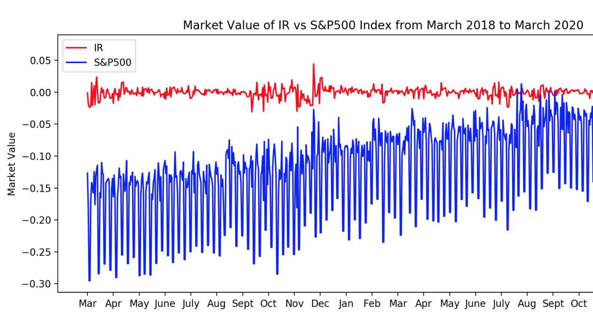

Personal Security Track
Basics of cybersecurity taught by Vlad Vysotsky and Clark Minor at UCLA during Fall Quarter 2017
Shark Attack Game
You're an octopus surrounded by a bunch of ravenous sharks... move around and ink to kill the sharks before they kill you!!!

Stock Market Machine Learning
Machine Learning using Historic Stock Market Data and Twitter Sentiment Analysis